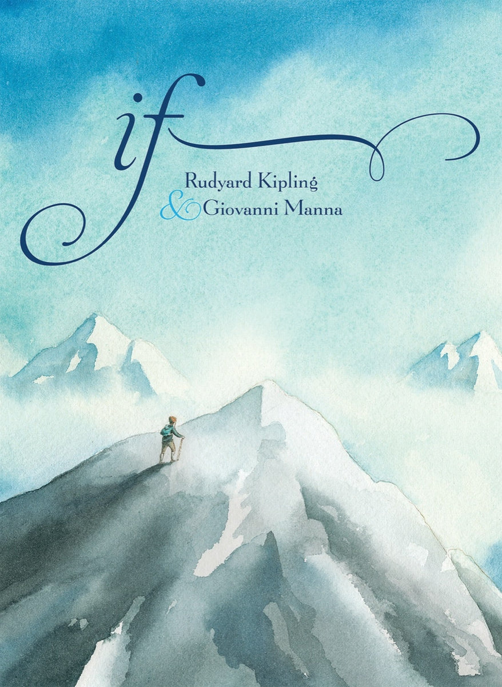

3:45 · 1 OPERA
Buon Natale a tutti quelli che...
Il filo del discorso
Gli auguri di Natale assumono la forma di una variazione dichiarata su If— di Rudyard Kipling. Il testo rivolge il saluto a chi conserva calma, autonomia di pensiero, pazienza e rispetto degli altri anche nelle difficoltà. Le immagini della poesia vengono adattate a un augurio di giustizia, libertà e capacità di ricominciare.
I libri nel discorso

If— (Se)
Copertina: The Creative Company / Creative Editions, 2014; illustrazioni di Giovanni Manna
Copertina dell’edizione autonoma illustrata di If—, con illustrazioni di Giovanni Manna. Edizione scelta come riferimento iconografico; nessuna edizione è confermata nel video.
Nel passaggio vengono pronunciati il titolo inglese If, la resa Se, il nome di Kipling e la natura di variazione natalizia della lettura.
Passaggio 0:12 ↗ · Fonti e libro ↗